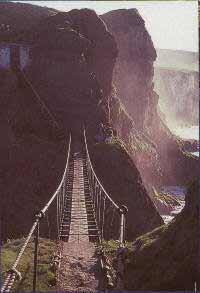

Это довольно любопытный деревянный мост, расположенный к северу от местечка Ballycastle. Мост перекинут над морем и соединяет сушу маленького скалистого острова с дорожным серпантином, въющемся по утесам Larrybane Cliffs. Для отважившихся совершить путешествие по этому мосту, качающегося над морской бездной, открывается удивительный магический вид на водные и пребрежные пространства. Этот мост сооружался каждую весну в течении последних 200-от лет, или более. Для рыбаков, которые организовывали ловлю лосося с берегов этого скалистого островка.